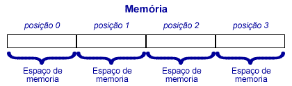
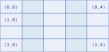

Aula 02 - Constantes, variáveis, matrizes e operadores
Igor Conrado Alves de Lima - prof.igor@microcamp.com.br
De maneira simples, pode-se dizer que constantes e variáveis são como caixas para se guardar dados ou informações.
Constantes são caixas para armazenar valores imutáveis (ex. Π).
Variáveis são caixas para armazenar valores que podem ser mutável (ex. endereço.).
Palavras reservadas em JavaScript: https://developer.mozilla.org/pt-BR/docs/Web/JavaScript/Reference/Lexical_grammar#Keywords
Constantes são criadas com ajuda da instrução const. Exemplo:
const pi = 3.14;Variáveis são criadas com ajuda da instrução var. Exemplo:
var endereco = "R. São Francisco, 625";Um novo tipo primitivo de dados chamado symbol foi adicionado à JavaScript em 2015 juntamente com o padrão ECMAScript 2015 (ES6). Saiba mais aqui.
A função typeof(<variável>) pode ser usada para verificar o tipo de uma variável ou constante em qualquer ponto de execução do programa.
Por exemplo:
var nome = "Mario Bros";
var idade = 32;
var empregado = true;
var profissao;
document.write("<p>Tipo de nome: ", typeof(nome), "</p>");
document.write("<p>Tipo de idade: ", typeof(idade), "</p>");
document.write("<p>Tipo de empregado: ", typeof(empregado), "</p>");
document.write("<p>Tipo de profissao: ", typeof(profissao), "</p>");
document.write("<p>Tipo de teste: ", typeof(teste), "</p>");Matrizes podem ser consideradas como super-variáveis por poder guardar vários valores por vez ao invés de apenas um.
Matrizes podem ser unidimensionais (vetor) ou bidimensionais.
Vetores possuem a capacidade de armazenar diversos valores em uma única direção: horizontal (vetor linha), e vertical (vetor coluna).
Exemplo de como um vetor é representado na memória:

var nomes = ["Huguinho", "Zezinho", "Luisinho"];
document.write("O nome referenciado pelo índice 0 é: ", nomes[0]);
document.write("<br/>O nome referenciado pelo índice 1 é: ", nomes[1]);
document.write("<br/>O nome referenciado pelo índice 2 é: ", nomes[2]);O mesmo código poderia ser escrito como:
var nomes = new Array(3);
nomes[0] = "Huguinho";
nomes[1] = "Zezinho";
nomes[2] = "Luisinho";
document.write("O nome referenciado pelo índice 0 é: ", nomes[0]);
document.write("<br/>O nome referenciado pelo índice 1 é: ", nomes[1]);
document.write("<br/>O nome referenciado pelo índice 2 é: ", nomes[2]);Crie um vetor com uma lista de frutas que você deve comprar em ordem na feira. Por fim, escreva na página os nomes de todas as frutas na ordem em que você deve comprá-las.
Matrizes bidimensionais são basicamente vetor dentro de outro vetor.
Matrizes bidimensionais permite trabalhar com o conceito de tabela, ou seja, linhas e colunas.

var agenda = [
["Segunda", "01", "Almoço com a família"],
["Quarta", "10", "Ligar para marcar o exame médico"],
["Sexta", "20", "Visitar a tia Ana"]
];
document.write("<h3>Dia da semana: ", agenda[0][0]);
document.write("<br />Dia do mês: ", agenda[0][1]);
document.write("<br />Compromisso: ", agenda[0][2], "</h3>");Crie uma matriz para armazenar os dados da tabela abaixo e exiba na tela a região, código,e nome do vendedor em destaque.
| Região | Código | Nome |
|---|---|---|
| Sul | 210 | Marcos Alexandre |
| Norte | 101 | Ricardo Oliveira |
| Leste | 155 | Maurício Mattar |
| Oeste | 15 | Márcio Pereira |
JavaScript possui basicamente os mesmos operadores das linguagens mais conhecidas. Nesse módulo vamos estudar os seguintes:
Devem ser usados para realizar operações de:
var idade_pai = 48;
var idade_mae = 40;
var idade_filho = 15;
var total = idade_pai + idade_mae + idade_filho;
var media = total / 3;
var diferenca_idade_pais = idade_pai - idade_mae;
var dobro_idade_filho = idade_filho * 2;
var resto = total % 3;
document.write("O total de idade é: ", total);
document.write("<br />A média de idade do grupo é: ", media);
document.write("<br />A diferença de idade do pai para a mãe é: ", diferenca_idade_pais);
document.write("<br />O dobro da idade do filho é: ", dobro_idade_filho);
document.write("<br />O resto da divisão do total por 3 é: ", resto);
document.write("<br />A idade do pai incrementado com ++ é: ", ++idade_pai);
document.write("<br />A idade da mãe decrementando com -- é: ", --idade_mae);O operador concatenação (+) é utilizado quando queremos juntar uma cadeia de caracteres (string) com outra.
O resultado da concatenação é uma outra string.
Exemplo:
var nome = prompt("Digite seu nome:");
var saudacao = "Olá! Seja bem-vindo, ";
document.write(saudacao + nome + '.');Um operador de atribuição atribui um valor ao operando à sua esquerda baseado no valor do operando à direita.
| Símbolo | Exemplo | Equivalente a |
|---|---|---|
| = |
x = 3; a = b + c;
|
--- |
| += |
x += 3; Se x era 1, passa para 4. |
x = x + 3; |
| += |
x -= 3; Se x era 1, passa para -2. |
x = x - 3; |
| *= |
x *= 2; Se x era 4, passa para 8. |
x = x * 2; |
| += |
x /= 2; Se x era 4, passa para 2. |
x = x / 2; |
| %= |
x %= 2; Se x era 3, passa para 1. |
x = x % 2; |
var nota1 = 8.5;
var nota2 = 7.5;
var nota_final = (nota1 + nota2) / 2;
document.write("A nota final é: ", nota_final);
nota_final += 2; //Acrescenta 2 pontos à variável nota_final
document.write("<br />A nota final é: ", nota_final);
São usados para comparar os valores de seus operandos e retornar um valor lógico (true/false).
| Símbolo | Descrição | Exemplo |
|---|---|---|
| == | valor igual a | 2 == "2"; //true |
| != | diferente de | 2 != 2; //false |
| === | valor e tipo igual a | 2 === "2"; //false |
| > | maior que | 5 > 2; //true |
| < | menor que | 5 < 10; //true |
| >= | maior ou igual a | 5 >= 5; //true |
| <= | menor ou igual a | 5 < 5; //true |
var idade = prompt("Qual sua idade?");
var maior_de_idade = idade >= 18;
document.write("Maior de idade? ", maior_de_idade);
var media = prompt("Qual foi sua média?");
var reprovado = media < 7;
document.write("<br />Reprovado? ", reprovado);Os operadores lógicos que conhecemos são E e OU.
Em JS os mesmo operadores são representados da seguinte forma:
true é preciso que todas as relações envolvidas também sejam true.true é preciso que pelo menos uma das relações envolvidas seja true.Caso precise refrescar a memória, consulte as aulas de lógica de programação aqui.